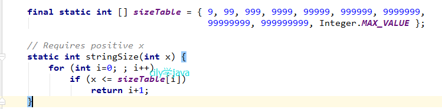
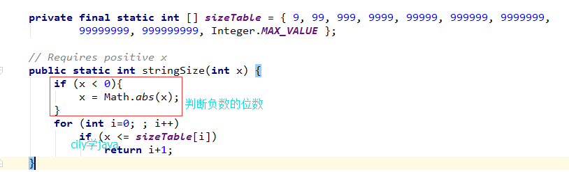

今天在做项目的时候，遇到一个需要计算int变量长度的问题。当时我的第一反应是转成String字符串，利用length（）方法，来计算int变量的长度；但回过头来一想，如果使用计算的方法，是否可以实现呢？好像也是可以的，利用除法等方法，应该也是可以计算出来的。但有没有更简单一点的方法呢？
看了看java的Integer类的源码，果然找到了一个方法stringSize(int x)方法可以直接返回int变量的长度，不过，很可惜的是，这个方法不是一个public方法，不能直接使用。但既然源码这样写，用个比较笨一点的方法，我把这个方法复制出来，作为一个工具方法，其源码为：
这个源码处理的非常巧妙，从1位数（9）开始判断，目标数是否小于等于1位最大数9，如果判断成立，直接return，循环结束，返回值即为我们所需的int变量位数。
个人看法，该方法非常巧妙的计算出int类型变量的长度，但同时也能看出来有些不足之处，这个判断是基于int变量为0或正数，对于负数而言，就不太适用了，所以，我就画蛇添足，加入了负数位数的判断的支持，代码如下：
以上就是个人对int变量长度判断的java源码的粗浅认识，如有遗误，欢迎指正，谢谢！